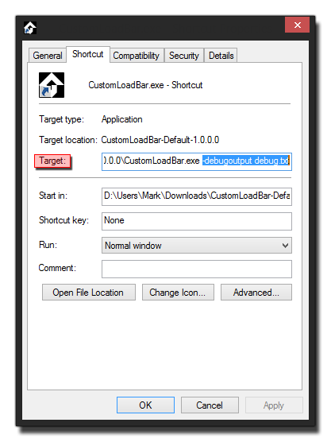

Beim Erstellen von Spielen ist es wichtig, dass Sie die ausführbare Datei testen, um sicherzustellen, dass die endgültige Kompilierung korrekt ist und keine unvorhergesehenen Fehler oder Unterschiede aufweist. Das Erstellen einer ausführbaren Datei bedeutet jedoch, dass es schwierig sein kann, Probleme zu lokalisieren und zu beheben, da Sie keinen Zugriff auf die Debug-Konsole oder das Compiler-Fenster haben. Allerdings gibt es eine Lösung dafür, nämlich die Verwendung von Befehlszeilenparametern, um bestimmte Eigenschaften festzulegen, wenn die ausführbare Version des Spiels ausgeführt wird, was es wiederum ermöglicht, Ausgabeprotokolldateien zu erstellen und andere spezielle Situationen zu testen.
HINWEIS: Dies ist nur für das Standard-Windows- Zielmodul verfügbar.
Damit das funktioniert, müssen Sie zuerst eine Windows-Programmdatei Ihres Spiels erstellen und diese auf Ihrem Testcomputer installieren. Sobald Sie das erledigt haben, müssen Sie eine Verknüpfung zum Spiel auf dem Desktop erstellen. Hier fügen wir die Parameter hinzu, die an die übergeben werden sollen *.exe (Um eine Verknüpfung zu erstellen, klicken Sie mit der rechten Maustaste  das Spiel ausführbare und wählen Sie dann Senden an > Desktop (Verknüpfung erstellen) ).
das Spiel ausführbare und wählen Sie dann Senden an > Desktop (Verknüpfung erstellen) ).
Sobald Sie Ihre Verknüpfung erstellt haben, können Sie einen der folgenden Parameter im Zielpfad verwenden:
- -noaudio: Dadurch wird der gesamte Ton in Ihrem Spiel ausgeschaltet.
- -inawindow: Erzwingt das Starten des Spiels in einem Fenster, auch wenn es im Vollbildmodus ausgeführt wird.
- -output <filename>: Sendet die Konsolenausgabe an den Dateinamen, einschließlich aller Debug-Meldungen, die Sie in Ihrer Codebasis haben.
- -debugoutput <filename>: Sendet die Konsolenausgabe an den Dateinamen, wobei alle benutzerdefinierten Debug-Meldungen ausgeschlossen werden, aber zusätzliche Informationen vom Runner zur Fehlerberichterstattung hinzugefügt werden.
- -software: Erzwingt, dass das Spiel Software Vertex Processing anstelle von Hardware zum Rendern der Spielgrafik verwendet. Dies ist besonders nützlich für PCs, die einen integrierten Intel GFX-Chipsatz verwenden oder Anzeigeprobleme auf älteren Computern zeigen.
- -intel: Dies wird eine Reparatur für schlechte Intel-Treiber einschalten, egal welche GPU verwendet wird. Diese Arbeit für diese schlechten Treiber wird die Dinge verlangsamen, was zu einem spürbaren Leistungseinbruch für Ihr Spiel führt. Wenn Sie den Fix also nicht benötigen, verwenden Sie ihn nicht.
- -vanillaGFX: Mit dieser Option wird die Überprüfung des Treiberherstellers deaktiviert und kann sehr nützlich sein, um Ihr Spiel "wie es ist" zu testen.
Es ist erwähnenswert, dass die <filename> im -output und -debugoutput Wenn gewünscht, kann das gleiche sein, da die Datei bei jedem Schreiben geöffnet und geschlossen wird.
Sie sollten nun zu der Stelle gehen, an der Sie die Verknüpfung zur ausführbaren Spieldatei erstellt haben, und dann mit der rechten Maustaste darauf klicken und Eigenschaften auswählen.  Dies öffnet ein Fenster ähnlich dem oben genannten. Hier können Sie Ihre Befehlszeile in den Zielpfad einfügen. Scrollen Sie einfach bis zum Ende des angegebenen Pfads, fügen Sie ein Leerzeichen und dann die Parameterzeichenfolge hinzu. Um zum Beispiel eine Debug-Datei-Ausgabe zu erstellen, müssten Sie:
Dies wird jetzt eine Datei namens " debug.txt "Am selben Ort wie die ausführbare Datei (nicht der Verknüpfungsort, aber wo das Spiel installiert ist) mit Debug- und Compiler-Informationen von Ihrem fertigen Spiel. Klicken Sie auf" OK "und verwenden Sie dann die Verknüpfung, um Ihr Spiel zu starten Parameter und Hilfe beim Debuggen.
Weitere Informationen zum Debuggen Ihres Spiels finden Sie im Abschnitt zum Debugging.
A / B-Test über die Befehlszeile
Der YoYo Runner profitiert auch von einem speziellen Kommandozeilenparameter:
- -game <filename>: lädt die angegebene Spieldatei
Warum würdest du das benutzen? Nun, normalerweise würdest du es nicht tun, aber wenn du mehr als eine Version deines Spiels gleichzeitig laufen lassen willst, kannst du das machen, was A / B Vergleichstests viel einfacher macht. Mit dieser Methode können Sie den Test auf jemand anderen konzentrieren oder als Designer ein besseres Gefühl für die Dinge entwickeln, indem Sie Side-by-Side-Tests durchführen.
Um das einzurichten, müssen Sie vorher einige Dinge wissen. Zu Beginn benötigen Sie den Pfad zum Runner selbst. Dies kann im Programmdatenordner Ihres Windows-Betriebssystems gefunden werden (dies kann verborgen sein, so dass Sie die Anzeigeeigenschaften ändern müssen, um es zu sehen), mit einem typischen Format wie diesem:
Notiere dass der runtime_version Der Ordner hängt von den Laufzeiten ab, die Sie gerade installiert haben. Du brauchst auch den Weg zum <yourgame>.win Datei, auf die wir den Läufer hinweisen wollen. Der einfachste Weg, dies zu finden, ist, in den Temp- Ordner zu wechseln (normalerweise bei %localappdata%\Temp\GameMakerStudio\<game_name>\ ) und suche einfach nach *.win, denn das zeigt Ihnen alle verfügbaren und Sie können einfach auswählen, was Sie benötigen, um den vollständigen Pfad zu erhalten.
Nun könnten wir eine Verknüpfung zum Runner erstellen, wie wir es für die Exe getan haben, und dann die Parameter nach Bedarf ändern, aber das bedeutet, dass wir sie zwischen den Tests öffnen und bearbeiten müssen, was den Zweck der Verwendung dieser Funktionalität für Side-by vereitelt -Seite testen. Stattdessen werden wir ein paar kleine "Stapel" -Dateien erstellen, um das zu handhaben.
Erstellen Sie dazu zuerst ein neues Textdokument auf Ihrem Desktop und öffnen Sie es im Editor. Fügen Sie Folgendes hinzu:
Sie müssen den Temp-Pfad so einstellen, dass er auf Ihr Spiel zeigt *.win Datei und speichern Sie dann als " GM_Test_1.bat "auf Ihrem Desktop (beachten Sie, dass der Editor automatisch als *.txt Datei, es sei denn, Sie wählen "Alle Dateien" aus den Speichern Dialogoptionen. Ein Beispiel dafür, wie Ihr endgültiger Befehl aussehen sollte, wäre:
Erstellen Sie jetzt eine andere Textdatei und fügen Sie die gleiche Zeile hinzu, nur diesmal verweisen Sie auf den Pfad für die zweite Version des Spiels, mit der Sie nebeneinander testen möchten, und Sie speichern dies als " GM_Test_2.bat ". Sie können doppelklicken  Sie können die verschiedenen Versionen Ihres Spiels aufrufen, und wenn Sie sie als Batch-Dateien haben, können Sie sie leicht wieder öffnen, um sie zu bearbeiten und das zu testende Spiel zu ändern.
Sie können die verschiedenen Versionen Ihres Spiels aufrufen, und wenn Sie sie als Batch-Dateien haben, können Sie sie leicht wieder öffnen, um sie zu bearbeiten und das zu testende Spiel zu ändern.